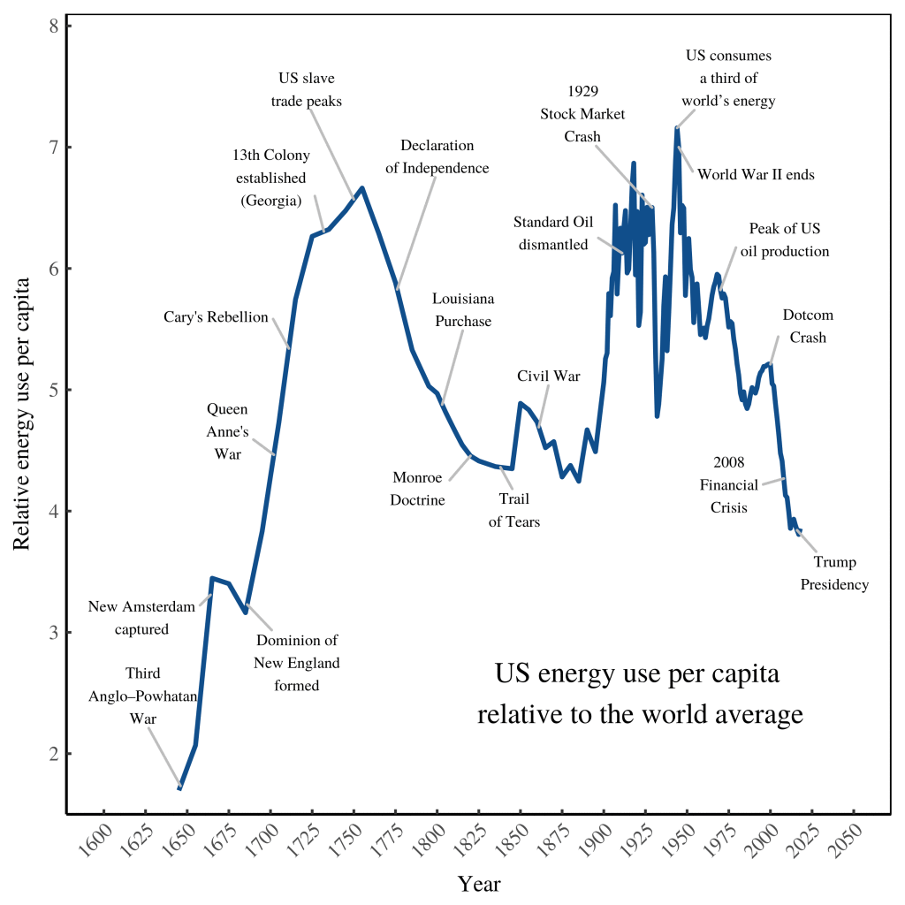
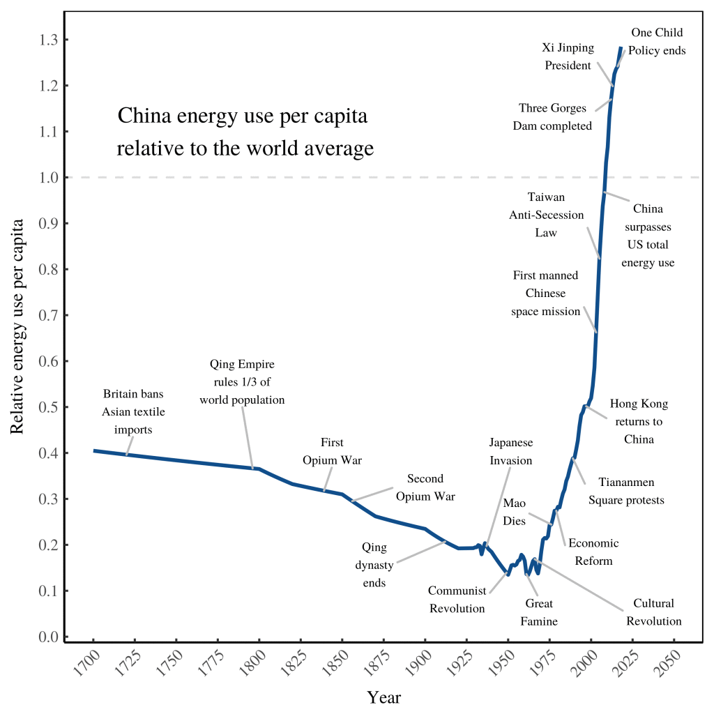

27 Energy Empires
Fix
The history of empires’ is not written in the speeches and proclamations of elites. Instead, it’s written in the language of energy. Although the motivations for empire building differ between societies, the end result is always the same. A successful empire centralizes the flow of energy. This means that energy use (per person) in the empire’s core will dwarf energy use in the periphery. The degree that this is true marks the degree that the empire is successful.
Energy use, then, provides a window into the rise and fall of empires.
How can we estimate the energy use of early empires? We make an educated guess. That’s exactly what Ian Morris does in his book The Measure of Civilization. Keep in mind that Morris’ data is less of a measurement and more of a back-of-the-envelope guess.

In his book Ages of Discord, Peter Turchin analyzes the long-waves of American social stability. His waves match (at least roughly) what’s written in the energy data. Turchin finds that social stability peaked after independence, but reached a trough by the Civil War. Stability rose again during the good times after World War II. But today, social stability is on the decline.
After the quagmire of civil war, American fortunes rose again. By the turn of the 20th century, the American empire was in full swing. As revealed by energy consumption, the ‘American century’ lasted roughly 70 years (1900–1970). During this time, the typical American consumed about 6 times more energy than the world average. The peak of US supremacy came during World War II. At the height of its war machine, the US consumed roughly one third of the world’s energy. The end of US dominance came around 1970. The decline was halted, briefly, during the boom of the 1990s. But then the dotcom bubble burst, and the energy slide continued. The pinnacle of US empire has long passed.

During the Middle Ages, China was the center of world civilization. But with the European renaissance, that would change. In the 19th century, Europe colonized China (although never as completely as it colonized neighboring India). Colonization eventually ended in the 20th century with the Chinese communist revolution. But this revolution didn’t end Chinese suffering. If anything, it exacerbated it. Still, China eventually emerged as an industrial power. In the last 40 years, its transformation has been remarkable. And the whole story is written in the ‘book of energy’.
When Mao died, the Chinese government abandoned hardline command and control. Instead, it let (big) firms take some of the economic reigns. After this reform, the growth of Chinese energy use was spectacular.
Chinese energy consumption has only recently surpassed the world average. Today, the typical Chinese citizen consumes about 1.3 times more energy than the world average. While China is on the rise, it has yet to catch up to the fading imperial power, the United States. Today, the typical American consumes about 3.8 times more energy than the world average. Although the US is in relative decline, it’s still a far wealthier nation (on average) than China.
China is marked by a great urban-rural divide. In 2012, Chinese urbanites earned about 300% more than their rural counterparts. In contrast, American urbanites earn only 36% more than their rural counterparts.4 This divide means that speaking about ‘average Chinese energy use’ is misleading. Some Chinese live much like modern Americans. Others live more like Americans of the 18th century. In the language of world-systems theory, we’d say that China ‘includes its own periphery’.
Blair Fix: Why America won’t be great again
Thomson
Nazi Energy Empire
Energy has been central to geopolitics since the industrial revolution. Oil-fuelled American industrialisation induced frenzied fears in Europe. From the 1870s, the conjunction of American oil resources allied to a continental single market and a high-tariff customs union drove a European scramble for energy resources and land empires in Africa. After the discovery of oil in the Middle East at a time when the US was moving to an oil-based navy, Britain, France, and Germany competed over the crumbling Ottoman empire. Britain’s victory in that competition – helped by its ability to project land power from India into the Persian Gulf – left it with a Middle Eastern empire that was a pivotal feature of the Eurasian map until the late 1960s. Germany’s defeat was central to the Nazis’ expansionist ambitions. From the mid-1920s, Hitler became obsessed with American mass car society and the domestic oil supply that fuelled it. In retaining Ford and General Motors’ presence in Germany, Nazi industrial strategy used short-term technological dependency on the United States in order to bring American-level mass automated production to Germany. In Hitler’s geopolitical fantasy, the autobahns German producers had learned to build would stretch out across Eurasia under German control. During the Second World War, he conceived Operation Barbarossa as the German equivalent of the conquest of the American West, since Russia was where on Europe’s immediate borders there were large quantities of oil.